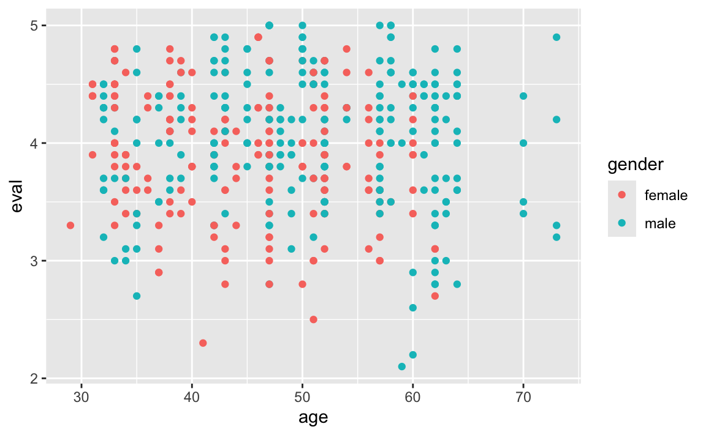

library(mosaic)
url <- paste0("https://vincentarelbundock.github.io/Rdatasets/csv/AER/",
"TeachingRatings.csv")
teacherratings <- read.csv(url)Einleitung
Bei einer multiplen linearen Regression kann man den Einfluss einer unabhägigen Variable auf das Verhalten einer anderen unabhägigen Variable in Bezug auf die abhägige Variable mit modellieren.
Wir wollen das einmal an dem Beispiel der folgenden Datentabelle Impact of Beauty on Instructor’s Teaching Ratings und der Fragestellung in wie weit das Alter und das Geschlecht einen Einfluss auf das Evaluationsergebnis haben.
Dazu stellen laden wir die Daten aus dem Internet:
und betrachten das Streudiagramm:
gf_point(eval ~ age, color = ~gender, data = teacherratings)
Ein lineares Modell
Ein klassisches lineares Modell sieht wie folgt aus:
erglm <- lm(eval ~ age + gender + age:gender, data = teacherratings)
coef(erglm)
#> (Intercept) age gendermale age:gendermale
#> 4.49018892 -0.01306572 -0.32104348 0.01109285Doch was bedeuten diese Werte konkret:
(Intercept) = 4.4901889: Gibt das (theoretische) Evaluationsergebnis für einer Frau im Alter von 0 Jahren an.
age = -0.0130657: Gibt an, um wie viele Punkte im Schnitt sich eine Frau pro Lebensjahr mehr verändert. (Da der Wert negativ ist, also verschlechtert.)
gendermale = -0.3210435: Gibt an, um wie viel sich das Startwert bei 0 Jahren verändert, wenn es ein Mann gewesen wäre. Wir kommen damit auf einen Startwert bei 0 Jahren für Männer von 4.1691454
age:gendermale = 0.0110928: Gibt an um wie viel sich die Steigung ändert, wenn statt einer Frau ein Mann betrachtet wird. Statt einer Änderung um -0.0130657 bei Frauen beträgt sie bei Männern \(-0.0130657-0.0110928 = -0.0019729\).
coef_female = c(coef(erglm)[1], coef(erglm)[2])
coef_male = c(
coef(erglm)[1] + coef(erglm)[3],
coef(erglm)[2] + coef(erglm)[4]
)
gf_point(eval ~ age, color = ~gender, data = teacherratings) %>%
gf_coefline(coef = coef_female, color = ~"female") %>%
gf_coefline(coef = coef_male, color = ~"male")
Wir können so die folgenden Modellgleichungen aufstellen:
Für Frauen: \[ \begin{aligned} \widehat{eval}_{\text{female}} & = 4.4901889 - 0.0130657 \cdot age \\ &\approx 4.49 - 0.013 \cdot age \end{aligned} \]
Für Männer: \[ \begin{aligned} \widehat{eval}_{\text{male}} &= 4.1691454 - 0.0019729 \cdot age\\ &\approx 4.169 - 0.002 \cdot age \end{aligned} \]
Besserer Blick durch gute Transformation der Daten
Spannender wäre es aber, wenn die y-Achenabschnitte nicht so weit ausserhalb unseres Betrachungsbereichs (29; 73) liegen würde.
Wir zentrieren daher einmal unsere Altersangaben mit der Transformation:
\[age_i^\text{center} = age_i - \overline{age}\]
In R:
# Mittelwert bestimmen und speichern:
mean_age = mean( ~ age, data = teacherratings)
# Transformation durchführen:
teacherratings %>%
mutate(
age_center = age - mean_age
) -> teacherratings
# Das Ergebnis kurz zusammenfassen:
df_stats(~ age + age_center, min, mean, sd, max,
data = teacherratings)
#> response min mean sd max
#> 1 age 29.00000 4.836501e+01 9.802742 73.00000
#> 2 age_center -19.36501 1.749500e-15 9.802742 24.63499Das der Mittelwert bei den zentrierten Daten nicht exakt Null ist liegt an den numerischen Besonderheiten des Rechners. Kurz: Computer können gar nicht richtig rechnen und haben daher hier einen kleinen Rundungsfehler!
Betrachten wir die gerundeten Werte, so ergibt sich das folgende, etwas übersichtlichere Bild:
# Wir bauen uns gerundete Funktionen:
round_digits <- 3 # Anzahl der Nachkommastellen
mean_r <- function(x) round(mean(x), round_digits)
sd_r <- function(x) round(sd(x), round_digits)
min_r <- function(x) round(min(x), round_digits)
max_r <- function(x) round(max(x), round_digits)
# Wir benutzen nun die gerundeten Werte:
df_stats(~ age + age_center, min_r, mean_r, sd_r, max_r,
data = teacherratings)
#> response min_r mean_r sd_r max_r
#> 1 age 29.000 48.365 9.803 73.000
#> 2 age_center -19.365 0.000 9.803 24.635Im Mittel sind unsere Lehrer:innen also \(48.365\) alt, die Jüngsten mit 29 etwa \(19.365\) jünger und die Ältesten mit 73 etwa \(24.635\) älter als der Altersdurchschnitt.
Ein Blick auf die Koeffizenten des linearen Modells bzgl. der zentrierten Daten:
erglm_c <- lm(eval ~ age_center + gender + age_center:gender,
data = teacherratings)
coef(erglm_c)
#> (Intercept) age_center gendermale
#> 3.85826543 -0.01306572 0.21546232
#> age_center:gendermale
#> 0.01109285Das dazu passende Streudiagramm mit den Regressionsgeraden:
coef_c_female = c(coef(erglm_c)[1], coef(erglm_c)[2])
coef_c_male = c(
coef(erglm_c)[1] + coef(erglm_c)[3],
coef(erglm_c)[2] + coef(erglm_c)[4]
)
gf_point(eval ~ age_center, color = ~gender,
data = teacherratings) %>%
gf_coefline(coef = coef_c_female, color = ~"female") %>%
gf_coefline(coef = coef_c_male, color = ~"male")
Was bedeuten nun diese Werte konkret:
(Intercept) = 3.8582654: Gibt das Evaluationsergebnis für einer Frau mit Durchschnittsalter (48) an.
age = -0.0130657: Gibt an, um wie viele Punkte im Schnitt sich eine Frau pro Lebensjahr mehr verändert.
gendermale = -0.3210435: Gibt an, um wie viel sich das Evaluationsergebnis eines Mannes im Durchschnittsalter ändert gegenüber dem einer Frau. Für das Durchschnittalter liegen Männer im Schnitt bei 4.0737278
age:gendermale = 0.0110928: Gibt an, um wie viel sich die Steigung ändert, wenn statt einer Frau ein Mann betrachtet wird. Statt einer Änderung um -0.0130657 bei Frauen beträgt sie bei Männern \(-0.0130657-0.0110928 = -0.0019729\).
Wir können daher die folgenden Modellgleichungen aufstellen:
Für Frauen: \[ \begin{aligned} \widehat{eval}_{\text{female}} & = 3.8582654 - 0.0130657 \cdot (age - 48.3650108) \\ &\approx 3.858 - 0.013 \cdot (age - 48.365) \end{aligned} \]
Für Männer: \[ \begin{aligned} \widehat{eval}_{\text{male}} &= 4.0737278 - 0.0019729 \cdot (age - 48.3650108) \\ &\approx 4.074 - 0.002 \cdot (age - 48.365) \end{aligned} \]
Zur Interpretation
Im durchschnittlichen Alter ist das erwartete Evaluationsergebnis bei Frauen (\(3.8582654\)) um rund \(0.215\) Punkte schlechter als bei Männern (\(4.0737278\)). Mit jedem Lebensjahr sinkt dabei in beiden Fällen, also sowohl bei Frauen als auch bei Männern, das Evaluationsergbnis. Bei den Frauen aber mit ca. \(-0.013\) deutlich stärker als mit ca. \(-0.002\) bei den Männern .
Fazit
Eine gute Transformation einiger Daten kann, dank der angepassten Modellgleichungen, die Interpretation der Ergebnisse deutlich vereinfachen!
Nachtrag und Danksagung
Die Idee zu diesem Blog-Post verdanke ich dem Blog von Prof. Dr. Sebastian Sauer. Hier der Link zum Orginal-Blog: https://data-se.netlify.app/2021/06/17/beispiel-zur-interpretation-des-interaktionseffekts/
Danke auch für die kritische Durchsicht und die hilfreichen Anmerkungen.